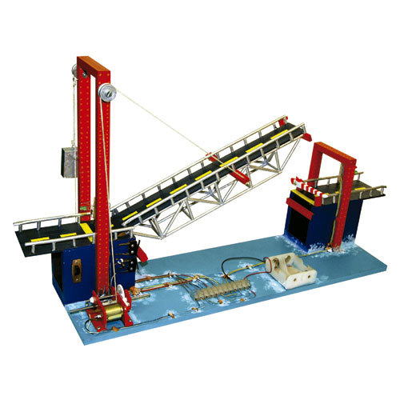

Puente levadizo
Impresiona a tus amigos y demuestra tus habilidades electrónicas construyendo un puente levadizo con tecnología de vanguardia. Aprende cómo utilizar opamps, resistencias, capacitores, un motor de paso y una fuente de alimentación de +-12 voltios para crear un puente levadizo funcional en una maqueta. ¡Entra ahora y transforma tus proyectos en un éxito!